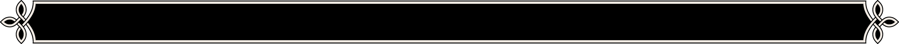
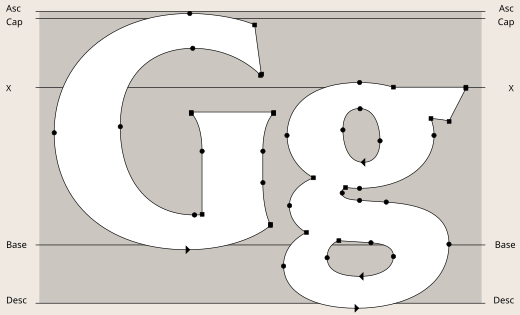
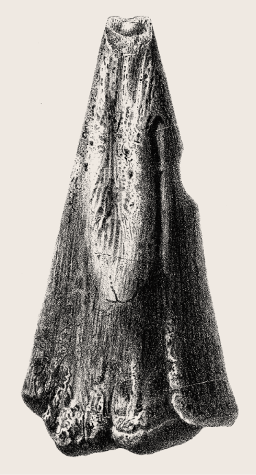

rydon is a typeface designed for a natural history. The project takes its starting point from the early reconstructions of Megalosaurus and Iguanodon during the formative years of dinosaur research in the early Victorian era. At the time, naturalists did not possess the comparative anatomical and geological knowledge or fossil evidence available today. They were required to imagine extinct creatures from limited clues, giving rise to numerous competing hypotheses and interpretations. Yet these attempts were not records of failure, but the foundation upon which modern palaeontology was built.
The typeface translates the narrative of natural history into letterforms, drawing upon the processes of discovery, revision, interpretation and reconstruction through which knowledge has accumulated over time. To express the scholarly value and significance of natural history, the typeface incorporates the traditional working methods of fossil preparation, while the process of stone carving served as a central guiding concept in the development of its letterforms. The design also draws upon the sculptural serifs of Albertus and the skeletal structure of Trajan to create a glyphic serif typeface. Its strokes and terminals reflect the marks of cutting and abrasion found in fossil preparation, while the contrast between a robust structure and refined details seeks to express the layered accumulation of knowledge across time.

In the development of the letterforms, the working methods of fossil preparation, particularly the use of hammers and chisels, were reinterpreted through the practice of type design.
Initial sketches drew upon the sculptural serifs of Albertus and the skeletal structure of Trajan, both representative glyphic typefaces inspired by carved stone inscriptions.


uring the 1820s, Megalosaurus and Iguanodon became the first dinosaurs encountered by science. Yet researchers of the period had no concept of what dinosaur was. Only fragmentary fossils remained, consisting of a handful of bones and teeth, and these only limited pieces of evidence had to be used to reconstruct entire extinct animals. As a result, Megalosaurus was restored as a giant quadrupedal reptile, while the distinctive spike of Iguanodon was once placed upon its nose like a horn. From a contemporary perspective these reconstructions may appear strange, yet they represented the most reasonable interpretations at the time.
As additional fossils were discovered, these reconstructions were revised. The supposed horn of Iguanodon was eventually recognised as a thumb spike, and scientific understanding of dinosaur posture and skeletal structure advanced considerably. These inaccurate reconstructions generated new questions and opened new avenues of inquiry, which in turn led to more rigorous research and further discoveries, helping to establish the foundations of modern palaeontology. Our understanding of natural history today is built upon this history of trial, revision and verification. Natural history is not the accumulation of perfect answers, but a continual process of inquiry through which we move closer to the truth from incomplete evidence.

atural history is not simply the study of ancient life. It is a discipline in which the history of life on Earth intersects with human curiosity, and a body of knowledge that continues to evolve through discovery and reinterpretation. Today, however, natural history is often perceived primarily as educational content for children. Grydon challenges this perception by presenting natural history as both a scholarly and sublime heritage. The typeface was designed to support both print and digital applications within contemporary natural history museums while retaining the qualities of traditional inscriptional forms.
The moment when Iguanodon's thumb spike was once placed upon its nose may appear to us as an error. Yet that small mistake represented one of humanity's first steps towards understanding a world that had vanished long before our own. The history of natural history is not a sequence of perfect answers, but a process of continual revision and discovery. Grydon commemorates the value of that process. It seeks to embody the idea that great discoveries begin with small steps, and that the history of natural history is shaped by the accumulation of those steps over time.


An illustration of the early reconstruction of Iguanodon is included as a stylistic set for the parentheses. The manicule is also based on the historical depiction of Iguanodon.


Megalosaurus is likewise depicted in its early quadrupedal reconstruction, which has been incorporated into both a stylistic set for the parentheses and the manicule.


Various stylistic sets are included for the capital A, M, N, O, Q, and U, the lowercase g, i and j,
as well as selected punctuation marks and symbols.